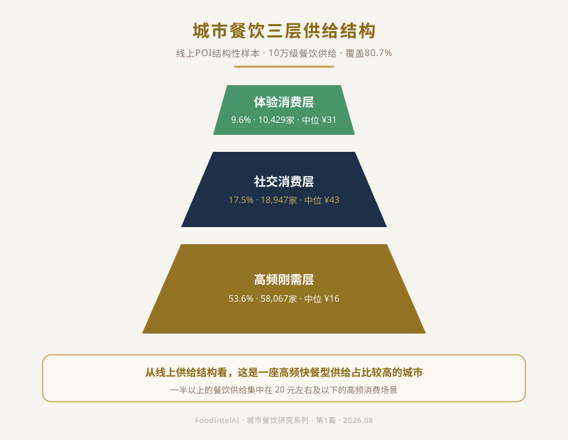
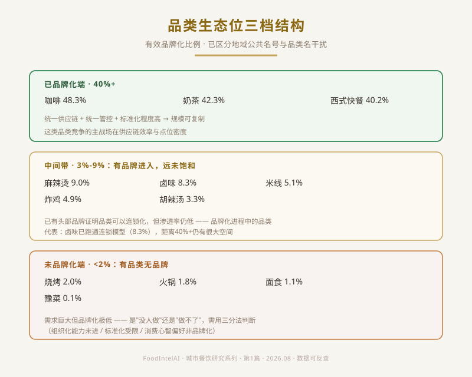

一座中部新一线城市的餐饮生态里，藏着两种完全相反的机会判断
假设有两个人，同时拿到这样一条数据：某品类门店超过6000家，可识别连锁比例却只有1.8%。
一个刚打算进入餐饮行业的人，看到的是：这么大的盘子，还没人做成品牌，我进去有机会。
一个干了二十年供应链和门店运营的人，看到的是完全相反的东西：这么大的盘子，这么多年都没人把它做成品牌，这里面可能卡着点什么。
这篇文章站在后一个人的位置。行业分析不是把数据念一遍，是要回答：为什么没人做成，而不是急着问能不能做成。这也是多数人看这类数据会读错的地方——把"门店多、品牌少"直接等同于"机会大"，中间漏掉了一整层判断。
一座城市的餐饮生态，不是孤立存在的。全国餐饮市场的规模变化、消费分级趋势、连锁化进程，是理解任何城市数据的背景板——同一个城市样本，放在"全国餐饮下行"和"全国餐饮扩张"两种背景下，读出的含义完全不同。
这也是本系列的骨架：先有宏观背景，再进城市结构，再落到品类与决策。全国大盘的完整数据与趋势分析，我们会在系列后续单独成篇展开；本篇先直接进入城市结构，把"这一层我们用什么角度看城市"讲清楚。
说"这座城市有10万+餐饮门店"，没有信息量。数字本身不回答任何问题。
真正值得问的是结构：这些线上可观察的餐饮经营点位（10万级），是由哪些类型的商业模型组成的？高频快餐、社交正餐、特色体验——它们的比例关系，才是一座城市餐饮生态的骨架。
以下三层分类，是 FoodIntelAI 基于消费场景与经营模型建立的分析框架，并非行业统一分类标准——这是我们看数据的角度，不是统计局口径。

把主要品类的门店数、价格、连锁化率放在同一张表里，会看到一个更深的规律：品类是否被品牌化，与需求规模无关，与标准化程度强相关。
| 档位 | 品类（门店数 / 有效品牌化比例） | 机制 |
|---|---|---|
| 已品牌化端 | 奶茶 3,457家（42.3%）· 咖啡 1,852家（48.3%）· 西式快餐 1,608家（40.2%） | 统一供应链 + 统一管控 + 标准化程度高 |
| 中间带 | 麻辣烫 1,449家（9.0%）· 卤味 3,848家（8.3%）· 米线 1,052家（5.1%）· 炸鸡 2,397家（4.9%）· 胡辣汤 2,481家（6.0%-6.25%） | 有品牌进入，远未饱和 |
| 未品牌化端 | 烧烤 3,038家（2.0%）· 火锅 6,241家（1.8%）· 面食 7,553家（1.1%）· 豫菜 1,927家（0.1%） | 需求巨大但品牌化极低 |
注：有效品牌化比例按统一品牌识别规则（统一品牌、统一供应链、统一管理体系）计算，具体品牌明细不展开，亦不针对任何具体企业。

剔除干扰后，分层反而更清晰：一端是奶茶、咖啡、西式快餐——靠统一供应链、统一管控做出规模，有效品牌化比例普遍在40%以上；中间是麻辣烫、卤味、米线、炸鸡、胡辣汤——有品牌进入但远未饱和（3%-9%）；另一端是火锅、面食、豫菜——需求巨大但品牌化极低，火锅即使有头部连锁品牌进入，仍只有1.8%，"有品类无品牌"在这座城市是结构性的，不是某一家企业不够努力。
这不是巧合，但也不该被简化成"没人做而已"。当你看到"品类体量大、连锁化率低"这个组合，先别急着把它翻译成"机会"，它其实对应三种完全不同的可能性——分不清是哪一种，进场可能去交学费。
拿这个框架去套：豫菜更接近③——在本城市样本中其品牌化程度较低，可能与家庭化口味差异和标准化难度有关；胡辣汤可能停留在②（工艺和组织化都未解决，只是共享公共地名带来的信任感）；火锅同时包含①和②（底料锅具能标准化，但线下体验和地域口味差异尚未彻底解决，六千多家高度分散）；烧烤长期面临②类标准化挑战；卤味则是中间带里最值得看的——头部卤味连锁品牌已经证明卤味可以连锁化（8.3%），但距离奶茶咖啡的40%+还有很大空间，可能同时受③（老字号信任感）和②影响。
第一，竞争主战场在低价高频层。53.6% 的正餐门店挤在 20 元以下价格带——这里比拼的是供应链效率与点位密度，不是差异化。奶茶、咖啡已经验证了这条路，也意味着后来者是在直面已经跑通规模的巨头，不是在一片空地上竞争。
第二，社交与体验层存在结构性供给缺口，但缺口不等于机会——要用上面的三分法先过一遍再判断。火锅 6,241 家却只有 1.8% 连锁、烧烤 3,038 家只有 2.0%——需求量级大、品牌化程度极低，这是"有品类无品牌"的典型地带，但具体是三分法里的哪一种，决定了这个缺口能不能进。
如果你是想低成本切入的新手——低价高频层不是没机会，是这里没有"差异化"这回事，拼的是纯执行效率：出餐速度、点位选择、成本控制。想清楚自己有没有这个能力，比想清楚"卖什么"更重要。
如果你是有供应链底子的老玩家——先别看哪个品类门店多，回到三分法：你能解决的，是①的组织化问题，还是②的工艺标准化问题？只有分清楚这一点，供给缺口才是真的属于你的机会。
如果你是从产业观察视角看机会——真正该问的不是"哪个品类门店最多"，也不是"哪个品类连锁化率高"，而是"这个连锁化率是真实的供应链能力，还是地域名号造成的错觉"。胡辣汤这次的核实结果，值得作为这类观察的一个警示案例。
本研究采用：① 城市餐饮POI结构采集（公开商业信息及合法数据来源形成的线上样本）；② 品类标签归类（二/三级分类）；③ 消费场景三层划分（FoodIntelAI 分析框架，非行业统一标准）；④ 品牌识别校准（区分真实连锁品牌与地域公共名号、品类名，有效品牌化比例按统一品牌/供应链/管理体系口径计算）；⑤ 生态位与竞争结构分析。数据为跨周期采集的去重快照，不做趋势推断；全部判断为基于样本的结构化归纳，标注证据边界。